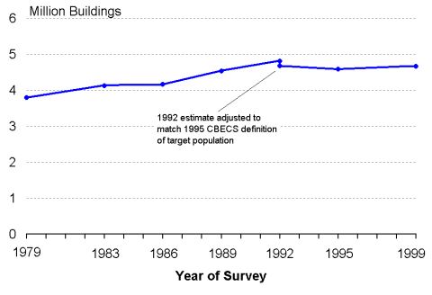
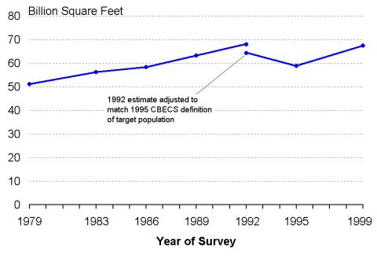

|
Data tables Commercial Buildings Trend—Detail Commercial Floorspace Trend—Detail Background:Adjustment to data
|
Trends in Buildings and FloorspaceEach year buildings are added to and removed from the commercial buildings sector. Buildings are added by new construction or conversion of existing buildings from noncommercial to commercial activity. Buildings are removed by demolition or conversion from commercial to noncommercial activity. Number of Commercial BuildingsIn 1979, the Nonresidential Buildings Energy Consumption Survey estimated that there were 3.8 million commercial buildings in the United States; by 1992, the number increased 27 percent to 4.8 million (an average annual increase of 1.8%) (Figure 1). In 1995, the estimated number declined to 4.6 million buildings, but it is unlikely that there was an actual decline in the number of buildings. To understand the apparent decline, two factors should be considered—the change in the way that the target population of commercial buildings was defined in 1995 and the uncertainty of estimates from sample surveys:
| |||
|
In 1999, there were 4.7 million commercial buildings in the United States. |
Figure 1. Total Commercial Buildings, 1979 to 1999  Energy Information Administration Amount of Commercial FloorspaceCommercial floorspace in the United States grew at a slightly greater rate than that of buildings. The survey estimated 51.1 billion square feet in 1979 and 67.9 billion square feet in 1992, a total increase of 33% and an average annual growth rate of 2.2% (Figure 2). The apparent decline in floorspace between 1992 and 1995 was steeper than the apparent decline in buildings, but the floorspace decline—like the buildings decline—was not statistically significant (graph detail). | |||
|
In 1999, there were 67.3 billion square feet of commercial floorspace in the United States. |
Figure 2. Total Commercial Floorspace, 1979 to 1999  Energy Information AdministrationCommercial Buildings Energy Consumption Survey Graph detail and data table Top Return to “Trends Introduction” Specific questions may be directed to: Alan Swenson Release date: 01/12/2000 If you are having any technical problems with this site, please contact the EIA webmaster at wmaster@eia.doe.gov.
|